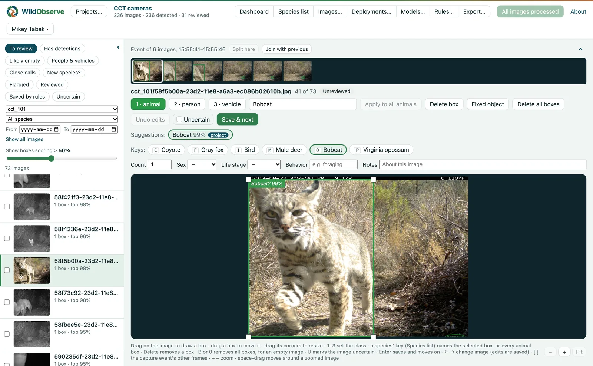

General species models are a good start, but they often don't work well on individual projects. WildObserve™'s Project Model learns both from the labels you make during review, on your own computer.
In short
- ✓ Predicts your species with 5-10 labels/species
- ✓ Retrains in about a second as you label
- ✓ No code, no GPU, no uploads
- ✓ Free for non-commercial use
Why a general model isn't enough
SpeciesNet, Google's species model, was trained on more than 65 million camera-trap images, and WildObserve uses it to suggest a species for every animal from the first image. But any model loses accuracy on images unlike the ones it learned from. On Oregon Critters, a dataset from western Oregon released after SpeciesNet was trained, it named none of the mountain beavers correctly (it most often said "Mammal") and only 7% of woodrats (it most often said "Rodent"). For 60% of birds, its best answer was just "Bird".
It also uses its own names. On cameras in Malawi's Nkhotakota Wildlife Reserve, it called yellow baboons "Kinda baboon", a related species, bushpigs "wild boar", and many duikers and other antelopes "white-tailed deer".
The usual fix is to retrain a deep network on your own images. That takes many labeled images per species, a graphics card (GPU), choices about how to train the network, and often programming. The alternative is uploading your images to a cloud platform.
What the Project Model is
Every WildObserve project gets its own model, trained on your computer from the animals you label in that project.
When WildObserve processes an image, SpeciesNet describes each animal as a list of 1,280 numbers, a kind of fingerprint, and WildObserve saves it. The Project Model is a simple classifier (a logistic regression) that learns your labels from those fingerprints. Because the fingerprints are already stored, no image is read again, and training takes about a second on a laptop's processor. In the paper's test, training on 437 labeled animals took 0.36 seconds.
- It starts once you've labeled at least three animals each of two species.
- It retrains in the background as you review, so the suggestions keep improving.
- Its suggestions are tagged project and use your project's own names, including groups such as "small rodent" and species SpeciesNet doesn't know.

How well it works
I tested the Project Model on public datasets in a preprint on bioRxiv. The scores below are balanced accuracy: the share of each species' animals a model names correctly, averaged over species, so common species don't dominate.
Species accuracy on a dataset SpeciesNet hadn't seen
Oregon Critters, 38 categories. The Project Model passes SpeciesNet alone at 10 labels per species.
Show the numbers
| Labels per species | Project Model, same cameras | Project Model, new cameras | SpeciesNet alone |
|---|---|---|---|
| 3 | 0.697 | 0.689 | 0.751 |
| 5 | 0.741 | 0.727 | 0.751 |
| 10 | 0.783 | 0.776 | 0.751 |
| 25 | 0.822 | 0.794 | 0.751 |
| 50 | 0.831 | 0.811 | 0.751 |
On Oregon Critters, SpeciesNet alone scored 0.751. The Project Model passed it with ten labels per species (0.783) and reached 0.831 with 50. At cameras it hadn't been trained on, it scored at most 0.028 lower, so what it learns carries over to new cameras.
Accuracy matters because of what comes next, and many camera-trap studies are used to predict occupancy: the share of sites a species uses. On 63 cameras in Nkhotakota, which SpeciesNet also hadn't seen, I reviewed part of the survey and let WildObserve estimate occupancy, then compared it with a full review of every image:
- 5% reviewed, with the Project Model's suggestions for the rest: occupancy within 0.11 of the full review, on average (11 percentage points).
- 5% reviewed, without suggestions: 0.41 away.
- SpeciesNet's suggestions, with no review: 0.24 away, mostly because of the names above.
From 5% reviewed, the 95% intervals with the Project Model's suggestions held the full review's estimate for 94 to 96% of species.
When SpeciesNet already knows your images, it does well on its own. On Caltech Camera Traps, which it was probably trained on, its suggestions alone gave occupancy within 0.06 of a full review. There, the Project Model's suggestions were less accurate with little review, and matched SpeciesNet's with half the survey reviewed. In review, you don't have to choose: WildObserve lists both models' suggestions for every animal.
Knowing when to trust it
A model taught only your species can be confidently wrong about an animal it has never seen, so the two models check each other. WildObserve fills in the Project Model's suggestion only when SpeciesNet agrees. When they disagree, nothing is filled in and the box is flagged, and it shows up first in the Close calls list.
In Project > Models…, every version of your Project Model is listed with how well it did on labels held out from its training, which species it finds, and which it mixes up. You can go back to an earlier version, and images you mark uncertain are left out of training.
Questions
How many labels does it need?
It starts with three labeled animals each of two species. In the paper's tests, ten labels per species passed SpeciesNet on a dataset it hadn't seen, and five nearly matched it on a dataset it probably had.
Do I need a GPU or programming?
No. It trains in about a second on a laptop's processor, and there are no settings to choose. WildObserve runs on Mac, Windows, and Linux.
Can it learn species SpeciesNet doesn't know?
Yes. It learns whatever you label, in your own names, including species SpeciesNet doesn't know and groups such as "small rodent".
Do my images leave my computer?
No. The Project Model trains and runs on your computer, and your images, their metadata, and your labels stay there.
Is it free?
Yes, in up to 3 projects simultaneously on the free Community plan, for non-commercial use. The paid plans include a Project Model in any number of projects.
A general model gets you started, and a Project Model learns the rest from the review you'd do anyway. Download WildObserve™ for free, or read how the models work in the user guide.
The details are in the preprint: Tabak, M. A. (2026). WildObserve: Camera-trap software that learns species labels during review and estimates occupancy and abundance. bioRxiv.